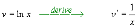
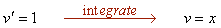
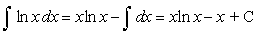
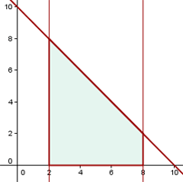
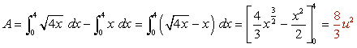

Area of Function Problems
1 Calculate the area of the site bounded by the curve y = 4x − x2 and the x-axis.
2 Find the area of the plane region enclosed by the curve y = ln x between the point of intersection with the x-axis and x = e.
3Find the area bounded by the line x + y = 10, the x-axis, x = 2 and x = 8.
4Calculate the area enclosed by the curve y = 6x2 − 3x3 and the x-axis.
5 Calculate the area enclosed by the curve f(x) = x3 − 6x2 + 8x and the x-axis.
6 Calculate the area of a circle of radius r.
7Find the area of an ellipse of semiaxes a and b.
8 Calculate the area enclosed by the curve y = x2 − 5x + 6 and the line y = 2x.
9 Calculate the area enclosed by the parabola y2 = 4x and the line y = x.
10Calculate the area enclosed by 3y = x2 and y = −x2 + 4x.
11 Calculate the area enclosed by y= x2 − 2x and y = −x2 + 4x.
12Calculate the area enclosed by:
y = sin x, y = cos x, x = 0.
1
Calculate the area of the site bounded by the curve y = 4x − x2 and the x-axis.
First, find the x-intercepts to the curve and the limits of integration.
2
Find the area of the plane region enclosed by the curve y = ln x between the point of intersection with the x-axis and x = e.

First, find the x-intercepts.





3
Find the area bounded by the line x + y = 10, the x-axis, x = 2 and x = 8.

4
Calculate the area enclosed by the curve y = 6x2 − 3x3 and the x-axis.

5
Calculate the area enclosed by the curve f(x) = x3 − 6x2 + 8x and the x-axis.


The area, for reasons of symmetry, can be written as:

6
Calculate the area of a circle of radius r.
Start from the equation of the circle x² + y² = r².

The area of the circle is four times the area of the first quadrant.

Calculate the indefinite integral by change of variable.


Find the new limits of integration.
7
Find the area of an ellipse of semiaxes a and b.

As the ellipse is a symmetrical curve, the area requested will be 4 times the area enclosed in the first quadrant of the coordinate axes.

Find the new limits of integration.

8
Calculate the area enclosed by the curve y = x2 −5x + 6 and the line y = 2x.
First, find the points of intersection of the two functions to know the limits of integration.
From x = 1 to x = 6, the line is above the parabola.
9
Calculate the area enclosed by the parabola y2 = 4x and the line y = x.

From x = 0 to x = 4, the parabola is above the line.

10
Calculate the area enclosed by 3y = x2 and y = −x2 + 4x.
First, represent the parabolas from the vertex and the points of intersection with the axes.


Also, find the points of intersection of the functions, which will give the limits of integration.


11
Calculate the area enclosed by y= x2 − 2x and y = −x2 + 4x.
Represent the parabolas from the vertex and the points of intersection with the axes.


12
Calculate the area enclosed by:
y = sin x, y = cos x, x = 0.
First, find the points of intersection of the functions:
The cosine graph is above the graph within the limits of integration.